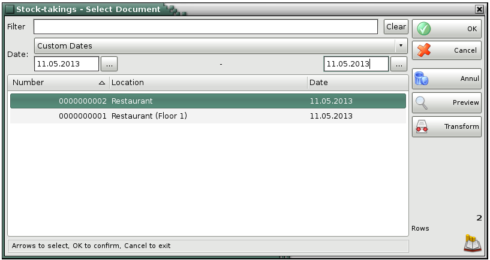
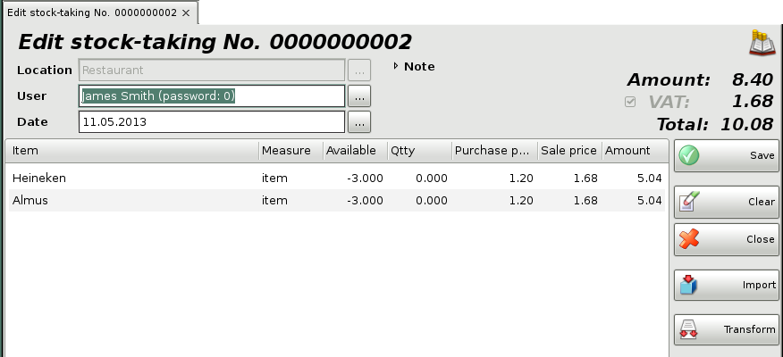

Edit stock-taking
In the Stock-taking � Select document select the document you wish to edit or print and click the OK button.

Use the Edit stock-taking window to edit or delete a performed stock-taking purchase.
The Filter option allows you to quickly position on a particular document by typing its number or by typing all or part of the location�s name. To remove specified filter click on the Clear button.

The User field allows you to edit the name of the user, who has performed the operation. You can visualize the list by pressing the F4 key.
You can type a new value in the Quantity field if you wish to modify the current entry.
To remove a particular item from the document, write the value from Available field in the Quantity field. To cancel the entire document, equalize all quantities of Qtty and Available fields.
Double-click the document date if you wish to change it. In the Calendar window select a date (by double-clicking it or by pressing the OK button). After you close the Calendar the new date appears in the Edit stock-taking window.
�2006-2015 Microinvest, All rights reserved